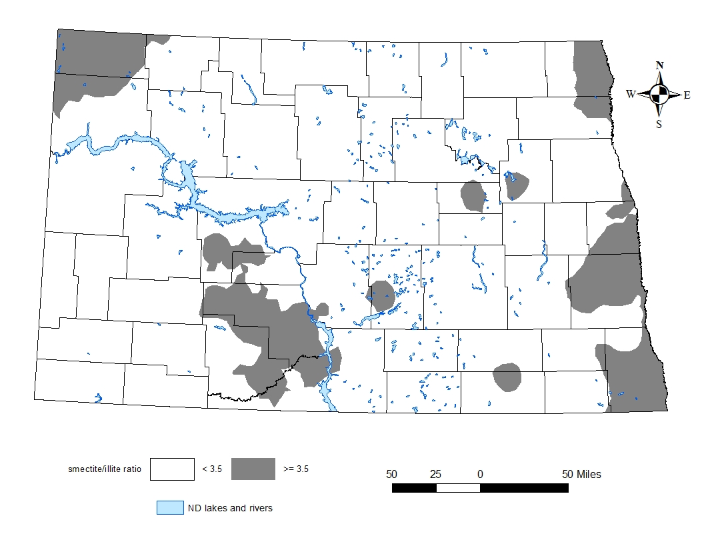

Input or select each required parameter value below to conduct corn potassium calculation. All fields are required.
Smectite-to-Illite Ratio

Smectite-to-illite ratio of surface soils in North Dakota from a soil sampling conducted in spring 2017. Dark gray regions are equal to or greater than 3:5. White areas are less than 3:5.
Soil Test K Level (unit: ppm)
Select a closest corn price ($/bushel):
Select a closest K2O price ($/pound) (or a 0-0-60 fertilizer price ($/ton)):
Brief intro goes here.
[App Developer] Honggang Bu
For more information, please contact:

Dr. David Franzen
Extension Soil Specialist
Phone: 701-799-2565
Email: david.franzen@ndsu.edu